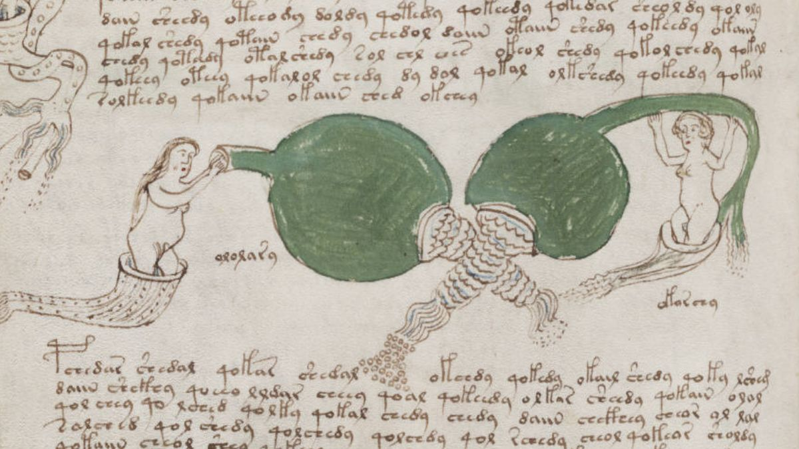

Bibliographie
Cette bibliographie rassemble une sélection d'ouvrages, d'articles universitaires et de ressources documentaires fréquemment cités dans les études consacrées au manuscrit de Voynich.
Cette liste n'a pas vocation à être exhaustive. Elle constitue néanmoins un excellent point de départ pour les lecteurs souhaitant approfondir leurs connaissances sur l'histoire du manuscrit, les tentatives de déchiffrement et les différentes hypothèses proposées depuis plus d'un siècle.
Ouvrages de référence
D'Imperio, Mary E.
The Voynich Manuscript: An Elegant Enigma
National Security Agency, 1978.
Zandbergen, René
The Voynich Manuscript Research Archive
Collection de travaux et d'analyses consacrés au manuscrit.
Prescott Currier
Studies on the Language of the Voynich Manuscript
Travaux présentés lors de différents colloques spécialisés.
William F. Friedman
Notes and Correspondence on the Voynich Manuscript
Archives cryptographiques historiques.
Articles universitaires
Montemurro, Marcelo A. & Zanette, Damián H.
"Keywords and Co-occurrence Patterns in the Voynich Manuscript"
PLoS ONE, 2013.
Reddy, Sravana & Knight, Kevin
"What We Know About the Voynich Manuscript"
Proceedings of ACL Workshop, 2011.
Landini, Gabriel
"Evidence of Linguistic Structure in the Voynich Manuscript"
Journal of Cryptology.
Stolfi, Jorge
Computational Approaches to Voynich Studies.
Histoire et contexte médiéval
Voigts, Linda Ehrsam
Studies in Medieval Medical Manuscripts.
Page, Sophie
Magic in Medieval Europe.
Campbell, Gordon
The Hermetic Tradition.
Thorndike, Lynn
A History of Magic and Experimental Science.
Cryptographie
Singh, Simon
The Code Book.
Kahn, David
The Codebreakers.
Friedman, William F.
Collected Cryptologic Papers.
Ces ouvrages permettent de comprendre les différentes méthodes de chiffrement médiévales qui ont parfois été proposées pour expliquer le manuscrit.
Ressources en ligne
- Bibliothèque Beinecke – Université Yale
- Voynich.nu – Archives de recherche de René Zandbergen
- Internet Archive
- Gallica – Bibliothèque nationale de France
- Europeana Collections
- British Library Digital Collections
Travaux cités par le CEEV
Les membres du Centre Européen d'Études Voynich s'appuient principalement sur les travaux universitaires publiés entre 1978 et aujourd'hui. Une attention particulière est portée aux études reposant sur des analyses statistiques, linguistiques ou historiques vérifiables.
Les hypothèses extraordinaires sont régulièrement évoquées dans la littérature populaire consacrée au manuscrit. Toutefois, le CEEV privilégie les approches fondées sur des sources documentées et reproductibles.
Bibliographie complémentaire
Cette liste est régulièrement enrichie. Les visiteurs souhaitant signaler un ouvrage ou une publication peuvent utiliser le formulaire de contact disponible sur le site.
La prochaine mise à jour bibliographique est prévue courant 2025.

Reproduction partielle d'un folio fréquemment cité dans les études iconographiques.
Dernière mise à jour : mars 2024